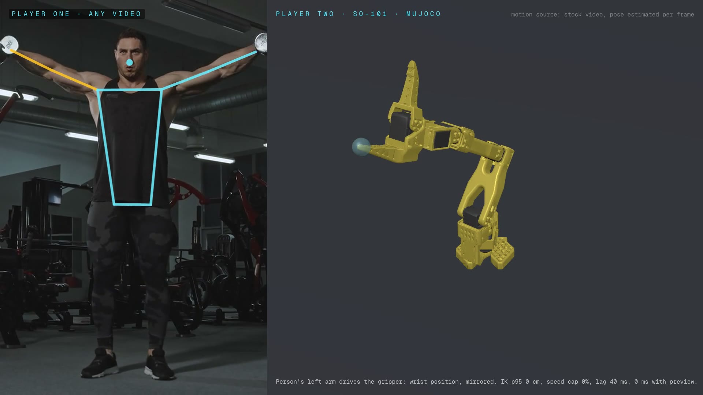
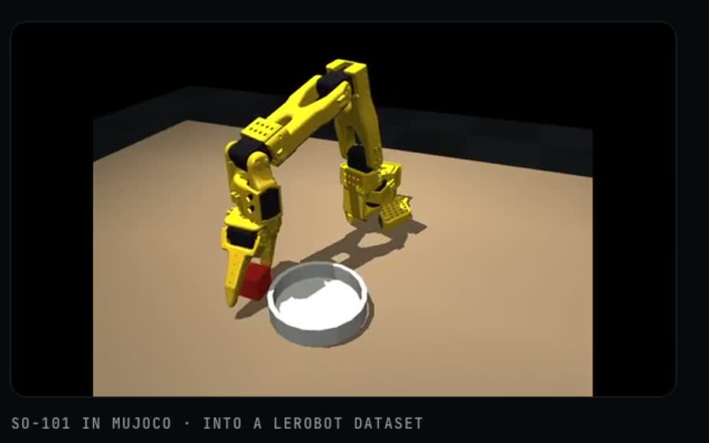
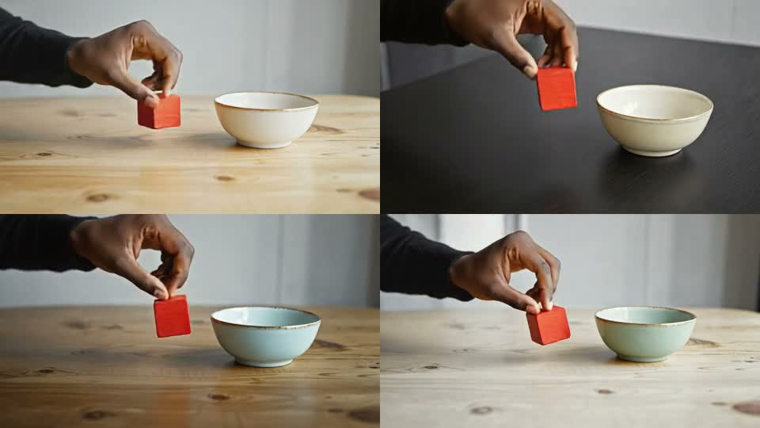
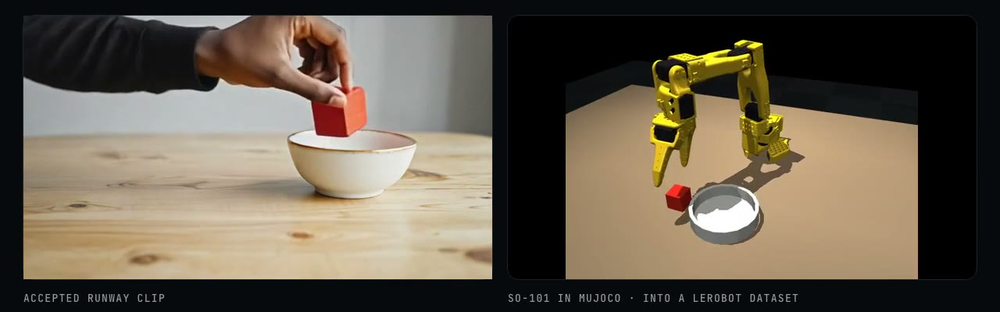
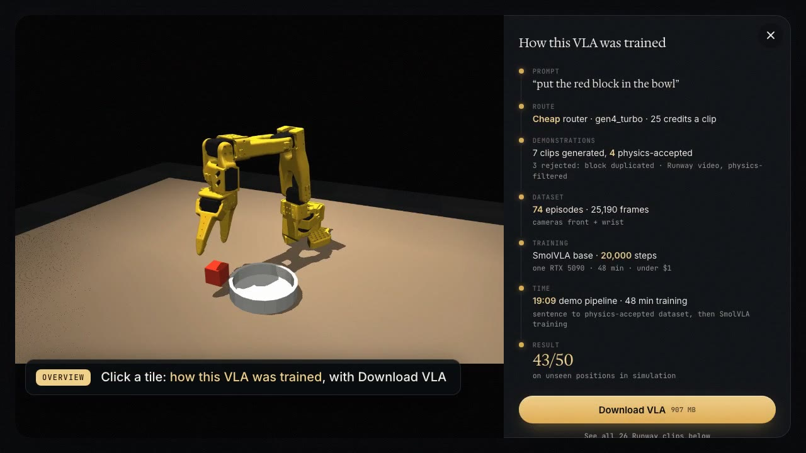
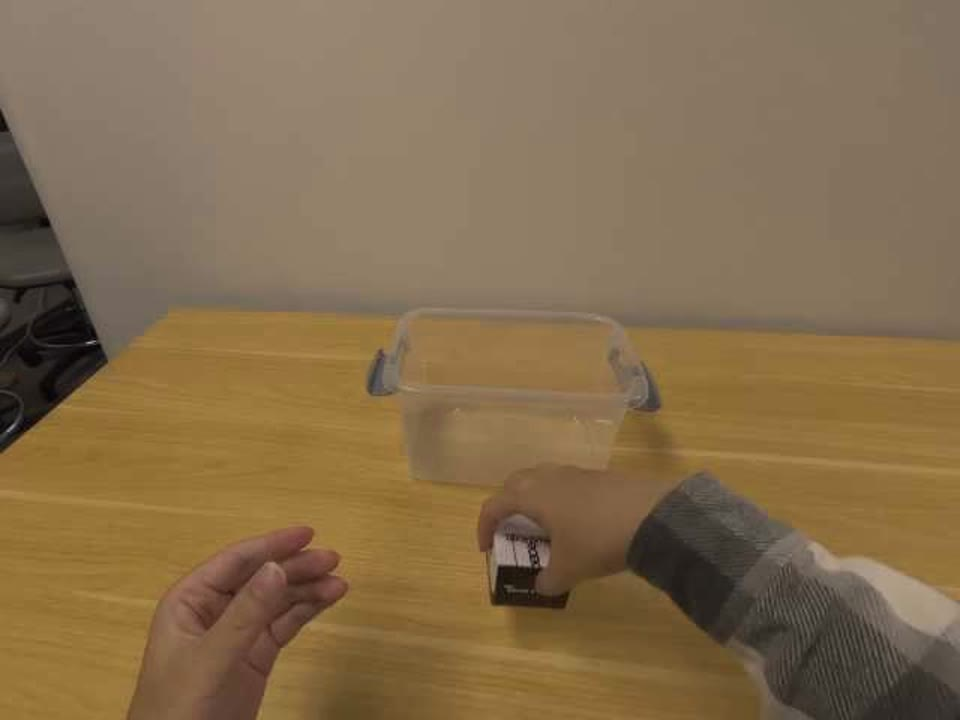

1st place, Runway API Hackathon, Sept 2026: Understudy (this talk)
1st place, Track 1, The Executable World AI Hackathon: Player Two
2nd place, ExecuTorch Hackathon (Qualcomm and Meta): SixthSense
Open source contributor: statsmodels, LanceDB, Biome
Preprint on where multi-step reasoning breaks in small language models
01 · The question
I wanted to test whether AI-generated video can train a robot.
Robot policies learn from demonstrations.
Today those come from teleoperation: a person driving the arm, one episode at a time. It works, and it is still the ground truth.
Video models are getting good. If a generated clip can stand in for a demonstration, data gets much cheaper.

Video of a person driving a simulated SO-101 (my earlier project, Player Two).
02 · What I built: Understudy
Type one sentence, get a trained policy.
Generate. Type the task. Runway makes clips of a hand putting a red block in a bowl. 7 clips.
Track. MediaPipe finds 21 hand points in every frame.
Retarget. The pinch point becomes the grasp point. Inverse kinematics turns it into SO-101 joint angles in MuJoCo.
Gate. 21 checks on the clip and on the physics replay. Kept only if the cube really lands in the bowl. 4 of 7 passed; the rest had a duplicated block.
Expand. Replay each clip with the cube moved up to 3 cm: 74 episodes, front and wrist cameras, saved as a LeRobot dataset.
Tune the VLA. Fine-tune SmolVLA on those 74 episodes. At 3,000 steps it scored 34 of 50. At 20,000 steps, 43 of 50. About 48 minutes on a rented GPU.
Baseline: the same model trained on a hand-written script that reads the exact cube position.

The SO-101 replaying a generated clip in MuJoCo.
The generated demonstrations
The 4 AI-generated clips that passed the checks.

Prompt: "put the red block in the bowl". Generated by Runway.
03 · Generated clip beside replay
Nobody was filmed for this demonstration.

Left: Runway-generated video of a hand putting a red block in a bowl.
Right: the SO-101 replay in MuJoCo.
The pinch point of the hand becomes the grasp point. Inverse kinematics gives the joint angles.
1st place, Runway API Hackathon (Sept 30, 2026).
04 · Result, in simulation
43 of 50 vs 44 of 50, in simulation.
Generated-video demonstrations
43 / 5034 / 50 at 3,000 steps
Scripted demonstrations
44 / 5044 / 50 at 3,000 steps
Same model, untrained
0 / 50
Same model (SmolVLA base) and same task: put the red block in the bowl.
Same 74 training starts, same 50 unseen test positions, 20,000 training steps each.
The 95% intervals overlap, so treat the two as tied.

The training run, 74 episodes, 20,000 steps.
05 · Demo (recorded): a prompt typed in, demonstrations out
Recorded. Press P to play. Code: https://github.com/PranavAchar01/understudy-replay
06 · Where this goes next
Next: video-to-video generation.
The clips I used were generated from a prompt, so the model invented the whole scene. Video-to-video takes a real clip and regenerates every frame, keeping its motion and layout while it changes the look.
Open question I'm studying at the UC Santa Cruz AIEA Lab: does a model trained on generated video see the world differently from one trained on real video? No results yet.
It still needs a real clip to start from. We can't generate teleoperation from scratch, so real demonstrations stay the seed.

A real human demonstration: the kind of clip video-to-video starts from.